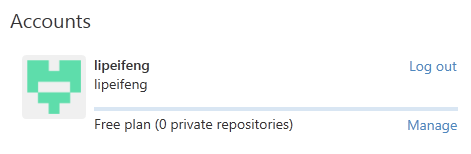

利用github搭建个人博客仓库
-
一、概述
-
可利用github pages搭建一个小站点，构建属于自己的个人博客
官网教程是： https://pages.github.com/
-
可利用github pages搭建一个小站点，构建属于自己的个人博客
-
二、Github Pages的使用（git操作可参考“git入门”）
-
1.登陆github官网登陆账号，然后点击“New repository”创建新的存储库
（Chrome浏览器可以右键点击中文翻译，方便阅读）
-
2.点击“New repository”跳转到新页面，填写项目仓库信息：
**存储库名称前缀一定要与账户名一致***

-
3.点击“创建存储库”，跳转到以下页面，点击“创建新文件”
-
4.填写新文件信息：
文件名一定是英文大写“CNAME”，文件内容为你所注册的域名，最好加上www前缀：www.lipeifeng.top。
-
5.github上创建完博客存储库后，先把存储库clone下载到本地，然后就可以编写自己的博客页面代码，最后上传。
（1）先打开git客户端，登陆与github官网一致的账号

（2）右键点击“Tutorial”，选中“Open in Git Shell”弹出小黑窗即可输入命令行

（3）$cd C:\Users\xdl\Desktop
以此等下拿github网站项目仓库时项目在桌面上
（4）先复制github网站项目仓库地址,然后$git clone xxx复制其仓库
（5）存储库拿到本地桌面了，就可以编写博客页面代码，
新建index.html且必须和你clone下来的.git文件夹在同一个目录下
（6）博客页面代码写完后就要从本地到存储库三步骤提交：
$git add .
$git commit -m “blog”
$git push
刷新github网页即可看到提交的文件：
-
6.以上步骤完成之后，即可通过域名访问你的博客,
或者github项目存储库名称也可访问到你的网页，当然一回车url就变成你CNAME所绑定的域名
-
一般情况下，到这里就可以庆祝了，比如你想托管你的简单的网页设置。
但是，如果你和我一样，博客在其他平台下托管，你想通过购买的域名跳转到该平台，你的任务还没结束。
只要一行js就好了，可以这么写index.html：<!DOCTYPE html> <html> <script> window.location.href="http://www.cnblogs.com/xzsz/"; </script> <body></body> </html> 然后提交就搞定了，我就可以通过lipeifeng.top直接跳转到我的博客页面了。
-
1.登陆github官网登陆账号，然后点击“New repository”创建新的存储库
------->>本·文·完